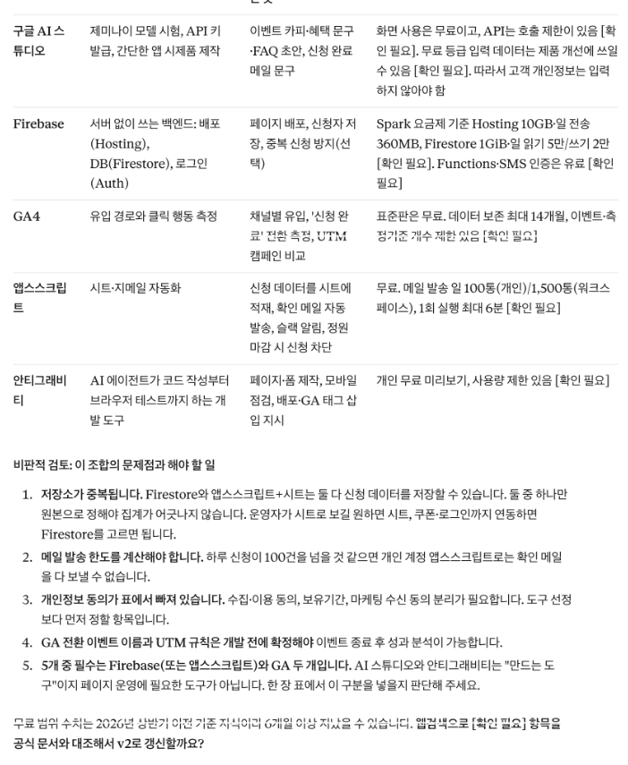
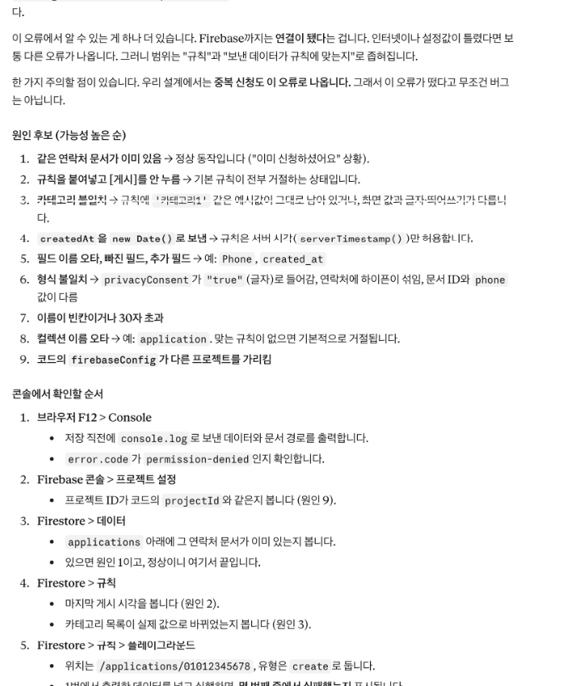
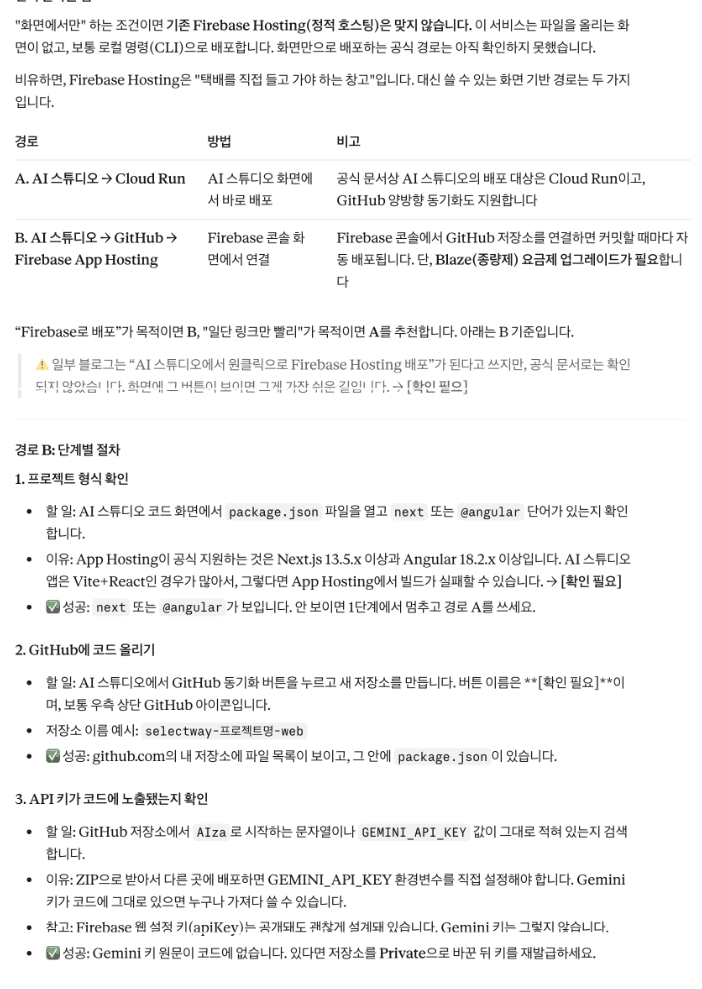
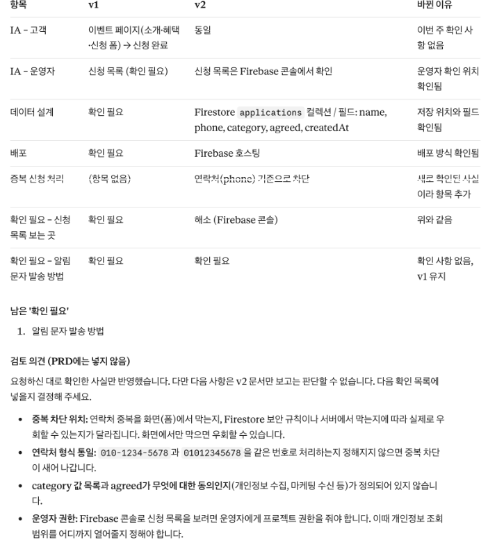

구글 AI 스튜디오와 Firebase로 모두의 신청을 한곳에 모아요
구글 서비스는 계정 하나로 이어져요. 오늘은 그 지도를 먼저 보고, 같은 요청서로 AI 스튜디오에서 페이지를 만들어 Firebase 데이터베이스에 신청을 저장하고 호스팅까지 해요. 마지막에 한 주의 결과를 PRD v2로 정리해요.
교육 개요
| 시간 | 09:00–18:00 (점심 12:00–13:00, 수업 8시간) |
|---|---|
| 교과 | [기본] AI 서비스 개발 · 6일차 (총 18일) |
| 교육 목표 | 구글 서비스의 역할을 구분하고, 데이터 정의표를 Firestore 구조로 바꿔 저장한 뒤 Firebase 호스팅으로 배포하고, 한 주의 결과로 PRD를 갱신할 수 있다. |
| 세션마다 같은 순서 | 개념 → 예시 → 실습 템플릿 → 프롬프트로 시작하기 → 점검·피드백 → 실패 케이스 → 결과 만들기 |
| 수업이 끝나면 | ① 구글 서비스 5개의 역할과 이벤트 페이지에서 쓰이는 곳을 말한다 ② 같은 요청서로 AI 스튜디오에서 페이지를 만들고 볼트와 비교한다 ③ 데이터 정의표를 컬렉션·문서·필드로 바꾼다 ④ AI가 할 일과 내가 콘솔에서 할 일을 나눠 Firestore 저장을 연결한다 ⑤ Firebase 호스팅 주소에서 테스트 시나리오를 다시 실행한다 ⑥ PRD v2와 한 주 회고를 쓴다 |
수업 전 준비
- 구글 계정: 수업용 구글 계정으로 로그인해 두세요.
- Firebase 콘솔: console.firebase.google.com 에 들어갈 수 있는지 확인해요.
- 어제 결과: 볼트 요청서와 테스트 시나리오 표를 열어 두세요.
① 개념을 짧게 보고 ② 이커머스 셀렉트마켓으로 채운 예시를 봐요. ③ 빈 템플릿을 내 내용으로 채우고 ④ 같은 일을 프롬프트로 AI에게 시켜 봐요. ⑤ 결과를 점검 프롬프트로 피드백받고 ⑥ 일부러 실패해 본 뒤 ⑦ 오늘의 결과물로 남겨요. 프롬프트는 요청 / 내용 / 형식 3줄로 쓰고, 바꿔 넣을 자리는 [ ]로 표시했어요.
타임테이블
| 시간 | 구분 | 내용 |
|---|---|---|
| 09:00–09:20 | 오늘의 단어 | 오늘의 단어 |
| 09:20–10:20 | SESSION 1 | 구글 서비스 지도 |
| 10:20–12:00 | SESSION 2 | 같은 요청서로 AI 스튜디오에서 만들기 |
| 12:00–13:00 | 점심 | |
| 13:00–15:00 | SESSION 3 | 데이터 정의표를 Firestore 구조로 바꿔 저장하기 |
| 15:00–16:30 | SESSION 4 | Firebase 호스팅 배포와 테스트 시나리오 다시 실행 |
| 16:30–17:40 | SESSION 5 | PRD v2와 한 주 회고 |
| 17:40–18:00 | 정리 | 오늘 정리와 과제 |
오늘의 단어
오늘 처음 나오는 말을 먼저 짧게 짚고 시작해요. 수업 중에 다시 나오면 이 표로 돌아와요.
| 단어 | 뜻 |
|---|---|
| 구글 AI 스튜디오 | 구글의 AI 모델로 앱을 만들어 보는 웹 도구 |
| Firebase | 구글의 '앱 뒷단' 서비스 묶음(데이터베이스·호스팅·로그인 등) |
| Firestore | Firebase 안의 데이터베이스 |
| 컬렉션 | 같은 종류의 문서를 모은 폴더 |
| 문서 | 데이터 한 건. 신청서 한 장 |
| 필드 | 문서 안의 칸(이름·연락처 등) |
| 보안 규칙 | 누가 데이터를 읽고 쓸 수 있는지 정하는 규칙 |
구글 서비스 지도
개념1-1. 개념
AI 스튜디오로 만들고, Firebase에 저장·배포하고, GA로 분석하고, 앱스스크립트로 자동화하고, 안티그래비티로 내 컴퓨터에서 작업해요. 같은 구글 계정으로 이어지는 이 지도를 이벤트 페이지의 어느 부분에 쓰는지로 정리하면 앞으로 이어질 수업의 길이 보여요.
예시1-2. 채워진 예시
이벤트 페이지 기준으로 정리한 예시예요.
| 서비스 | 하는 일 | 이벤트 페이지에서 쓰는 곳 |
|---|---|---|
| 구글 AI 스튜디오 | 말로 화면·앱 만들기 | 신청 페이지 만들기(오늘) |
| Firebase | 데이터 저장·호스팅·로그인 | 신청 저장, 배포 주소(오늘) |
| GA | 방문·행동 측정 | 방문 대비 신청 완료율(가설 판정) |
| 앱스스크립트 | 구글 문서·시트·메일 자동화 | 신청자에게 안내 메일 |
| 안티그래비티 | 내 컴퓨터에서 AI와 코딩 | 파일이 많아졌을 때 수정 |
실습 템플릿1-3. 실습 템플릿
예시를 보고 빈칸을 내 내용으로 채워요. 손으로 다 채우지 못해도 괜찮아요. 다음 단계에서 AI로 채우는 방법을 연습해요.
| 서비스 | 하는 일 | 이벤트 페이지에서 쓰는 곳 |
|---|---|---|
| 구글 AI 스튜디오 | ||
| Firebase | ||
| GA | ||
| 앱스스크립트 | ||
| 안티그래비티 |
서비스 | 하는 일 | 이벤트 페이지에서 쓰는 곳 구글 AI 스튜디오 | | Firebase | | GA | | 앱스스크립트 | | 안티그래비티 | |
프롬프트로 시작하기1-4. 프롬프트로 시작하기
템플릿을 손으로 채우는 대신 AI에게 초안을 받아요. [ ] 안은 이커머스 셀렉트마켓 예시 값이에요. 내 내용으로 바꿔 써요.
요청: 구글 서비스 5개를 기획자 관점에서 한 장으로 정리해 줘 내용: 서비스: [구글 AI 스튜디오, Firebase, GA, 앱스스크립트, 안티그래비티] / 내 서비스: [이커머스 셀렉트마켓 연말 이벤트 사전 신청 페이지] 형식: 표(하는 일 / 이벤트 페이지에서 쓰는 곳 / 무료로 되는 범위 [확인 필요] 허용)

점검·피드백1-5. 점검·피드백
AI가 만든 초안이나 내가 채운 템플릿을 그대로 쓰지 않고, 기준을 주고 점검받아요. 칭찬 말고 고칠 점을 받는 게 목적이에요.
요청: 내 지도에서 역할이 겹치거나 헷갈린 곳을 찾아 줘 내용: 내 표: [위 5줄] 형식: 표(서비스 / 맞음·헷갈림 / 바로잡은 설명)
실패 케이스1-6. 실패 케이스 만들어 보기
일부러 틀리게 해 보고, 결과가 어떻게 달라지는지 확인해요.
| 만들어 볼 실패 | 이렇게 해 봐요 | 무엇이 보이고, 어떻게 풀까 |
|---|---|---|
| Firebase를 하나로 보기 | 'Firebase = 데이터베이스'라고만 적고 점검받아 봐요. | Firebase는 여러 서비스 묶음이고 데이터베이스는 그중 Firestore라고 나와요. |
| 무료 범위 단정하기 | 무료 칸에 숫자를 확인 없이 적어 봐요. | 점검에서 출처가 없다고 나와요. 공식 요금 페이지 확인 전에는 [확인 필요]로 둬요. |
결과 만들기1-7. 결과 만들기
이렇게 보이면 성공5줄 모두 '이벤트 페이지에서 쓰는 곳'이 채워졌다
같은 요청서로 AI 스튜디오에서 만들기
개념2-1. 개념
요구사항은 그대로 두고 도구만 바꿔요. 어제 볼트 요청서를 그대로 넣으면 도구의 성격 차이만 보여요. 결과를 도구 비교 결과표에 적어 '같은 요청, 다른 결과'를 기록해요.
예시2-2. 채워진 예시
같은 요청서를 세 도구에 넣은 결과 비교 예시예요.
| 기준 | 클로드 아티팩트 | 볼트 | AI 스튜디오 |
|---|---|---|---|
| 요청서 항목이 다 들어갔나 | 예 | 예 | 확인 |
| 예외 문구가 들어갔나 | 요청 후 추가 | 예 | 확인 |
| 저장까지 됐나 | 아니오 | 예(내장 DB) | 다음 세션 |
| 배포까지 됐나 | 파일로 꺼내 배포 | 예 | 다음 세션 |
| 다시 쓸 때 | 시안·문구 다듬기 | 빠른 배포 시안 | 구글 서비스와 연결 |
실습 템플릿2-3. 실습 템플릿
예시를 보고 빈칸을 내 내용으로 채워요. 손으로 다 채우지 못해도 괜찮아요. 다음 단계에서 AI로 채우는 방법을 연습해요.
| 기준 | 클로드 아티팩트 | 볼트 | AI 스튜디오 |
|---|---|---|---|
| 요청서 항목이 다 들어갔나 | |||
| 예외 문구가 들어갔나 | |||
| 저장까지 됐나 | |||
| 배포까지 됐나 | |||
| 다시 쓸 때 |
기준 | 클로드 아티팩트 | 볼트 | AI 스튜디오 요청서 항목이 다 들어갔나 | | | 예외 문구가 들어갔나 | | | 저장까지 됐나 | | | 배포까지 됐나 | | | 다시 쓸 때 | | |
프롬프트로 시작하기2-4. 프롬프트로 시작하기
템플릿을 손으로 채우는 대신 AI에게 초안을 받아요. [ ] 안은 이커머스 셀렉트마켓 예시 값이에요. 내 내용으로 바꿔 써요.
요청: 이커머스 셀렉트마켓 연말 이벤트 사전 신청 페이지를 만들어 줘 내용: 요청서: [어제 볼트 요청서 그대로 — 만들 것: 소개·혜택 3가지·신청 폼·완료 안내 / 만들지 않을 것: 로그인·결제·관리자 화면 / 예외: 연락처 형식, 동의, 중복 신청, 12월 15일 마감] / 저장: [아직 연결하지 말 것] 형식: 한 페이지, 휴대폰에서도 보이게
점검·피드백2-5. 점검·피드백
AI가 만든 초안이나 내가 채운 템플릿을 그대로 쓰지 않고, 기준을 주고 점검받아요. 칭찬 말고 고칠 점을 받는 게 목적이에요.
요청: 세 도구 결과를 내 비교 결과표로 정리해 줘 내용: 관찰: [클로드는 예외 문구를 추가 요청해야 했다 / 볼트는 저장·배포까지 됐다 / AI 스튜디오는 ○○했다] 형식: 표(기준 5개 × 도구 3개) + '이럴 때 이 도구' 한 줄씩. 내가 관찰하지 않은 칸은 [확인 필요]
실패 케이스2-6. 실패 케이스 만들어 보기
일부러 틀리게 해 보고, 결과가 어떻게 달라지는지 확인해요.
| 만들어 볼 실패 | 이렇게 해 봐요 | 무엇이 보이고, 어떻게 풀까 |
|---|---|---|
| 요청서를 바꿔서 넣기 | AI 스튜디오에만 '더 화려하게'를 덧붙여 봐요. | 도구 차이인지 요청 차이인지 알 수 없어요. 요청서는 그대로 두고 비교해요. |
| 저장까지 한 번에 | 'Firestore에 저장까지 해 줘'를 첫 요청에 넣어 봐요. | 설정이 필요한 단계에서 막히거나 알 수 없는 설정이 생겨요. 화면 먼저, 저장은 다음 세션에서 나눠요. |
결과 만들기2-7. 결과 만들기
이렇게 보이면 성공세 도구의 '다시 쓸 때' 칸이 서로 다르다
데이터 정의표를 Firestore 구조로 바꿔 저장하기
개념3-1. 개념
Firestore는 컬렉션(폴더) 안에 문서(신청서 한 장)가 쌓이고, 문서 안에 필드(칸)가 있어요. 수요일 데이터 정의표를 이 구조로 바꾸면 AI에게 정확히 요청할 수 있어요. AI가 대신 해 줄 수 있는 일(코드 연결)과 내가 콘솔에서 직접 해야 하는 일(프로젝트 만들기·웹 앱 등록·데이터베이스 만들기)을 나눠서 진행해요.
예시3-2. 채워진 예시
데이터 정의표를 Firestore 구조로 바꾼 예시예요.
| 데이터 정의표 | Firestore | 예시 값 |
|---|---|---|
| 신청 내역 | 컬렉션: applications | — |
| 신청 1건 | 문서(자동 ID) | — |
| 이름 | 필드 name (문자) | 박지은 |
| 연락처 | 필드 phone (문자) | 010-0000-0000 |
| 관심 선물 카테고리 | 필드 category (문자) | 뷰티 |
| 개인정보 동의 | 필드 agreed (참·거짓) | true |
| 신청 시각 | 필드 createdAt (시각) | 2026-11-06 14:03 |
실습 템플릿3-3. 실습 템플릿
예시를 보고 빈칸을 내 내용으로 채워요. 손으로 다 채우지 못해도 괜찮아요. 다음 단계에서 AI로 채우는 방법을 연습해요.
| 데이터 정의표 | Firestore | 예시 값 |
|---|---|---|
| 컬렉션: | ||
| 문서 | ||
| 필드 | ||
| 필드 | ||
| 필드 | ||
| 필드 |
데이터 정의표 | Firestore | 예시 값 | 컬렉션: | | 문서 | | 필드 | | 필드 | | 필드 | | 필드 |
프롬프트로 시작하기3-4. 프롬프트로 시작하기
템플릿을 손으로 채우는 대신 AI에게 초안을 받아요. [ ] 안은 이커머스 셀렉트마켓 예시 값이에요. 내 내용으로 바꿔 써요.
요청: 신청하면 Firestore에 저장되게 하려고 해. 내 데이터 정의표를 컬렉션·문서·필드 구조로 바꾸고, Firebase 설정이 필요한 단계에서는 멈추고 내가 할 일을 알려 줘 내용: 데이터 정의표: [입력: 이름·연락처·관심 선물 카테고리·개인정보 동의 / 저장: 신청 내역 + 신청 시각] / 중복 신청 정책: [같은 연락처면 저장하지 않고 '이미 신청하셨어요'] 형식: 표(데이터 / 컬렉션·필드 이름 / 형식) + 단계 목록(내가 할 일 · AI가 할 일 구분)

점검·피드백3-5. 점검·피드백
AI가 만든 초안이나 내가 채운 템플릿을 그대로 쓰지 않고, 기준을 주고 점검받아요. 칭찬 말고 고칠 점을 받는 게 목적이에요.
요청: Firebase 저장이 안 될 때 읽는 법을 연습하고 싶어. 아래 오류가 무슨 뜻인지, 내가 콘솔에서 확인할 것을 알려 줘 내용: 오류: [FirebaseError: Missing or insufficient permissions.] 형식: 원인 후보 + 콘솔에서 확인할 순서. 규칙을 모두 열어 두는 방법을 답으로 주지는 마

실패 케이스3-6. 실패 케이스 만들어 보기
일부러 틀리게 해 보고, 결과가 어떻게 달라지는지 확인해요.
| 만들어 볼 실패 | 이렇게 해 봐요 | 무엇이 보이고, 어떻게 풀까 |
|---|---|---|
| 보안 규칙 막힘 | 데이터베이스를 만들 때 고른 규칙 그대로 저장을 시도해 봐요. | 'permissions' 오류가 날 수 있어요. 오류 문장을 그대로 붙여 원인을 묻고, 규칙을 '아무나 다 쓰기'로 열지 않아요. |
| 콘솔에서 확인 안 하기 | 화면에 '완료'가 떴다고 끝내 봐요. | Firestore 화면에 문서가 없을 수 있어요. 콘솔에서 컬렉션과 문서를 직접 열어요. |
결과 만들기3-7. 결과 만들기
이렇게 보이면 성공콘솔 applications 컬렉션에 문서가 보이고 필드 이름이 구조표와 같다
Firebase 호스팅 배포와 테스트 시나리오 다시 실행
개념4-1. 개념
Firebase 호스팅은 보통 터미널 명령이나 깃헙 연결로 올려요. 화면에서만 하려면 AI 스튜디오의 배포 기능이나 깃헙 저장소를 Firebase 콘솔에 연결하는 방법(App Hosting, 종량제 요금제 필요)이 있어요. 어느 경로를 고르든 AI에게 먼저 경로를 설명받고, 요금제가 바뀌는 단계에서는 멈춰요. 오늘의 목표 장면은 배포 주소에서 휴대폰과 컴퓨터로 신청하고, 두 신청이 내 콘솔에 함께 쌓이면 수요일의 '내 브라우저에만 저장'을 넘어선 거예요. 어제 테스트 시나리오 표를 그대로 다시 실행해 볼트판과 비교해요.
예시4-2. 채워진 예시
Firebase 호스팅 주소에서 다시 실행한 테스트 시나리오 예시예요.
| 번호 | 행동 | 기대 결과 | 볼트판 | Firebase판 |
|---|---|---|---|---|
| 1 | 휴대폰에서 모든 칸 입력 후 신청 | 완료, 콘솔에 문서 1개 | O | O |
| 2 | 연락처 형식 오류 | 안내, 저장 안 됨 | O | O |
| 3 | 동의 없이 신청 | 안내, 저장 안 됨 | O | O |
| 4 | 같은 연락처로 다시 신청 | '이미 신청하셨어요' | X→수정 후 O | O |
| 5 | 컴퓨터에서 신청 | 콘솔에 휴대폰 신청과 함께 | O | O |
실습 템플릿4-3. 실습 템플릿
예시를 보고 빈칸을 내 내용으로 채워요. 손으로 다 채우지 못해도 괜찮아요. 다음 단계에서 AI로 채우는 방법을 연습해요.
| 번호 | 행동 | 기대 결과 | 볼트판 | Firebase판 |
|---|---|---|---|---|
| 1 | ||||
| 2 | ||||
| 3 | ||||
| 4 | ||||
| 5 |
번호 | 행동 | 기대 결과 | 볼트판 | Firebase판 1 | | | | 2 | | | | 3 | | | | 4 | | | | 5 | | | |
프롬프트로 시작하기4-4. 프롬프트로 시작하기
템플릿을 손으로 채우는 대신 AI에게 초안을 받아요. [ ] 안은 이커머스 셀렉트마켓 예시 값이에요. 내 내용으로 바꿔 써요.
요청: 이 페이지를 Firebase 호스팅으로 배포하려고 해. 내가 할 일과 확인할 것을 순서대로 알려 줘 내용: 현재: [AI 스튜디오에서 만든 페이지, Firestore 저장 연결 완료] / 주의: [로컬에서 직접 배포하는 명령은 이번엔 쓰지 않고, 화면에서 할 수 있는 방법 우선] 형식: 단계 목록, 단계마다 '이렇게 보이면 성공'. 버튼 이름이 확실하지 않으면 [확인 필요]

점검·피드백4-5. 점검·피드백
AI가 만든 초안이나 내가 채운 템플릿을 그대로 쓰지 않고, 기준을 주고 점검받아요. 칭찬 말고 고칠 점을 받는 게 목적이에요.
요청: 두 버전의 테스트 결과를 비교해서 다음에 고칠 것 1개를 골라 줘 내용: 결과: [볼트판 4번 X→수정 후 O / Firebase판 1~5 모두 O / 콘솔에 휴대폰·컴퓨터 신청 2건] 형식: 표(번호 / 두 버전 차이 / 원인 추정) + 다음에 고칠 것 1개와 이유
실패 케이스4-6. 실패 케이스 만들어 보기
일부러 틀리게 해 보고, 결과가 어떻게 달라지는지 확인해요.
| 만들어 볼 실패 | 이렇게 해 봐요 | 무엇이 보이고, 어떻게 풀까 |
|---|---|---|
| 시크릿 창만 확인 | 내 컴퓨터 시크릿 창에서만 신청해 봐요. | 같은 기기라 '다른 기기 신청이 모이는지'를 확인하지 못해요. 휴대폰으로도 넣어요. |
| 테스트 표 없이 배포 완료 | 주소가 열리는 것만 보고 끝내 봐요. | 중복 신청 같은 예외가 맞는지 모른 채 넘어가요. 테스트 시나리오 5줄을 모두 실행해요. |
결과 만들기4-7. 결과 만들기
이렇게 보이면 성공콘솔에 휴대폰과 컴퓨터에서 넣은 신청 2건이 보인다
PRD v2와 한 주 회고
개념5-1. 개념
한 주 동안 같은 페이지가 문장 → 화면 → 배포 → 저장으로 자랐어요. 화요일 PRD v1의 '확인 필요' 칸은 이번 주 실습으로 많이 채워졌어요. 확인한 사실로 PRD를 v2로 갱신하고, 회고(계속할 것·문제였던 것·시도할 것)를 남기면 다음 주에 어디서부터 시작할지 분명해져요.
예시5-2. 채워진 예시
PRD v1 → v2로 바뀐 칸과 회고 예시예요.
| 항목 | v1 | v2 (이번 주 확인한 사실) |
|---|---|---|
| IA | 운영자: 신청 목록(확인 필요) | 운영자: Firebase 콘솔에서 신청 확인 |
| 데이터 설계 | — | applications 컬렉션, 필드 5개 |
| 배포 | — | Firebase 호스팅 주소 |
| 확인 필요 | 알림 문자 발송 방법 | 알림 문자 발송 방법(그대로), 보안 규칙 운영 기준 |
| 회고 | — | 계속: 요청서 먼저 / 문제: 중복 신청 누락 / 시도: 테스트 표를 요청서에 붙이기 |
실습 템플릿5-3. 실습 템플릿
예시를 보고 빈칸을 내 내용으로 채워요. 손으로 다 채우지 못해도 괜찮아요. 다음 단계에서 AI로 채우는 방법을 연습해요.
| 항목 | v1 | v2 (이번 주 확인한 사실) |
|---|---|---|
| IA | ||
| 데이터 설계 | ||
| 배포 | ||
| 확인 필요 | ||
| 회고 | — | 계속: / 문제: / 시도: |
항목 | v1 | v2 (이번 주 확인한 사실) IA | | 데이터 설계 | | 배포 | | 확인 필요 | | 회고 | — | 계속: / 문제: / 시도:
프롬프트로 시작하기5-4. 프롬프트로 시작하기
템플릿을 손으로 채우는 대신 AI에게 초안을 받아요. [ ] 안은 이커머스 셀렉트마켓 예시 값이에요. 내 내용으로 바꿔 써요.
요청: 이번 주 결과로 내 PRD를 v2로 갱신해 줘. 내가 확인한 사실만 반영하고, 나머지는 v1 그대로 둬 내용: PRD v1: [IA: 고객 이벤트 페이지(소개·혜택·신청 폼) → 신청 완료 / 운영자: 신청 목록(확인 필요) · 데이터 설계: 확인 필요 · 배포: 확인 필요 · 확인 필요: 신청 목록 보는 곳, 알림 문자 발송 방법] / 이번 주 확인한 사실: [저장: Firestore applications 컬렉션, 필드 name·phone·category·agreed·createdAt / 배포: Firebase 호스팅 / 운영자 확인: Firebase 콘솔 / 중복 신청: 연락처 기준으로 막음] 형식: 표(항목 / v1 / v2 / 바뀐 이유). 남은 '확인 필요'는 따로 목록

점검·피드백5-5. 점검·피드백
AI가 만든 초안이나 내가 채운 템플릿을 그대로 쓰지 않고, 기준을 주고 점검받아요. 칭찬 말고 고칠 점을 받는 게 목적이에요.
요청: 내 한 주 회고를 읽고 다음 주에 바로 할 행동 1개로 바꿔 줘. 칭찬은 빼고 내용: 회고: [계속: 요청서를 먼저 쓴다 / 문제: 중복 신청을 테스트에서 늦게 발견 / 시도: 테스트 표를 요청서에 붙인다] 형식: 행동 1개(언제·무엇을·어떻게 확인) + 그 행동이 회고의 어느 줄에서 나왔는지
실패 케이스5-6. 실패 케이스 만들어 보기
일부러 틀리게 해 보고, 결과가 어떻게 달라지는지 확인해요.
| 만들어 볼 실패 | 이렇게 해 봐요 | 무엇이 보이고, 어떻게 풀까 |
|---|---|---|
| AI가 PRD를 새로 쓰게 두기 | 'PRD 더 좋게 다시 써 줘'라고 해 봐요. | 확인하지 않은 기능과 숫자가 들어가요. v1에서 바뀐 칸만 고치게 해요. |
| 회고를 느낌으로 쓰기 | '재밌었다, 어려웠다'로 써서 점검받아 봐요. | 행동으로 바꿀 수 없다고 나와요. 무엇이 문제였는지 장면으로 적어요. |
결과 만들기5-7. 결과 만들기
이렇게 보이면 성공PRD v2의 바뀐 칸마다 이번 주 실습 근거가 있다
오늘 정리와 과제
오늘의 규칙 3줄
- 데이터 정의표를 컬렉션·문서·필드로 바꿔서 요청한다
- AI가 할 일과 내가 콘솔에서 할 일을 나눈다
- 같은 테스트 시나리오로 버전을 비교한다
구글 서비스 지도 + 도구 비교 결과표 + Firestore 구조표 + Firebase 호스팅 주소 + PRD v2
PRD v2와 배포 주소를 정리해 와요. 남은 '확인 필요' 하나를 골라 이유와 함께 적어요.